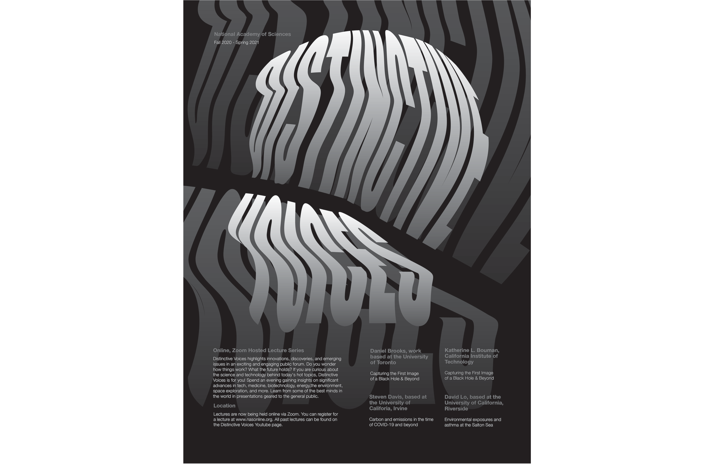
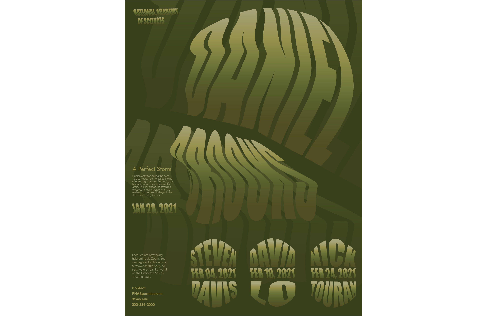
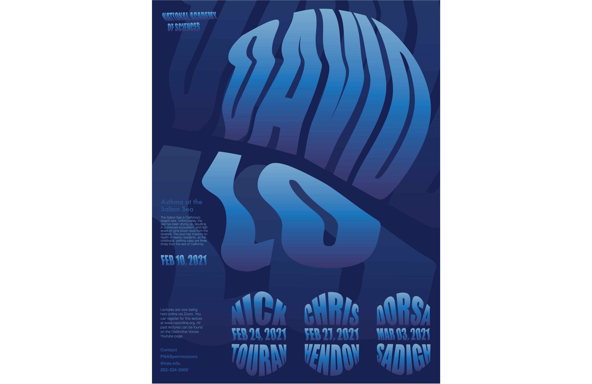

Michael Berliner
Design and Photography
Works
Home
Design
Photography
Contact
1 / 5
2 / 5
3 / 5

4 / 5

5 / 5

❮
❯
Distinctive Voices
Producing a full, cohesive visual system. The experimental nature of the Distinctive Voices lecture series led to a visual language that has ties to the human experience and organic matter, while incorporating colors that speak to each specific lecture within the full series. The system was utilized for an overarching series poster, accompanied by two posters for individual lecture speakers, as well as three animated posts and a Zoom background.